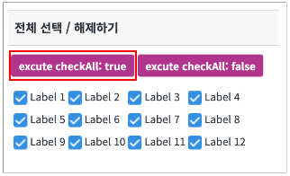
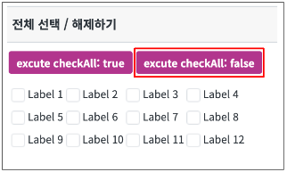

[CheckBox] 선택 항목 전체 선택 / 해제 하기
1개요
CheckBox의 선택 항목 전체를 선택 / 해제하는 예제입니다. CheckBox의 API인 checkAll() 함수를 이용하여 체크할 때는 "true", 해제할 때는 "false"를 입력합니다.
2구현된 기능
선택 항목 전체 선택 / 해제하기
3예제 테스트 방법
3.1선택 항목 전체 선택 / 해제하기
- STEP1. 버튼 excute checkAll: true 를 클릭해서 전체가 선택되는지 확인합니다.
그림 1.브라우저(Chrome) 실행 예시

- STEP2. 버튼 excute checkAll: false 를 클릭해서 전체 선택이 해제되는지 확인합니다.
그림 2.브라우저(Chrome) 실행 예시

4구현 예시
4.1checkAll 함수 사용하기
선택 항목을 전체 선택할 시점이나 이벤트 등에 해당하는 CheckBox의 checkAll 함수를 실행합니다.
선택을 할 때는 "true", 해제를 할 때는 "false"를 입력합니다.
예제에서는 버튼의 onclick 이벤트를 활용했습니다.
scwin.btn_true_onclick = function (e) {
cbx_main.checkAll(true);
};5주요 API
checkAll( checkFlag )
6참고 문서
[웹스퀘어5 SP5 개발 가이드] CheckBox
링크 : https://docs1.inswave.com/sp5_user_guide/8df43d1f59fab704#27cc3703f47a5f30
7참고 동영상
CheckBox 가이드
링크 : https://youtu.be/oWlUmnfkBeA?si=sh8Dvgz3oBh4LgbU